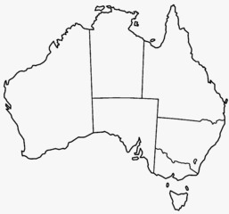

The latin name for Kolala is Phascolarctos cinereus("ash-colored pouch bear").

Koala live in Australia
*('o')* Koala
Facts *('o')*
Koala are great. They have fluffy ears and are like toddy bears. Only they come with a heart <3.
Koala's live in Australia. they are actually more closely related to Kangaroo than Bears (they have
pouchesl). They eat alot of Eucalyptus plants. They were discovered by Europeans over 200 years ago, and
there are records of them being called names like "Koolong", "Koolah", and "Boorabee."
Interestingly, Koals have one of the smallest brains in proportion to their body weight. They usually
live a solidary life in trees, sleeping up to 18 hours a day.